Understand the concept of differential expression and statistical testing
Perform differential expression analysis using the DESeq2 package
Interpret the results of differential expression analysis
In this module, we will put all of our R knowledge together to perform a differential expression analysis of RNA-Seq data. We will use the DESeq2 package, which is a widely used tool for analysing count data from RNA-Seq experiments.
The data we will we use in this workshop is part of a larger study described in Kenny PJ et al., Cell Rep 2014. The authors investigated interactions between various genes involved in Fragile X syndrome, a disease of aberrant protein production, which results in cognitive impairment and autistic-like features. They sought to show that RNA helicase MOV10 regulates the translation of RNAs involved in Fragile X syndrome.
The RNA was extracted from HEK293F cells that were transfected with a MOV10 transgene (MOV10 over-expression), MOV10 siRNA (MOV10 knockdown), or an irrelevant siRNA (Control).
We will use this data to investigate changes in transcription upon perturbation of MOV10 expression relative to the control (irrelevant siRNA) experiment.
Raw Data
The raw RNA-seq data is available publicly via GEO and the SRA (sequence read archive).
Dataset
Description
Replicate
Control_1
Control
replicate 1
Control_2
Control
replicate 2
Control_3
Control
replicate 3
MOV10_OE_1
MOV10 over-expression
replicate 1
MOV10_OE_2
MOV10 over-expression
replicate 2
MOV10_OE_3
MOV10 over-expression
replicate 3
MOV10_KD_2
MOV10 knock-down
replicate 2
MOV10_KD_3
MOV10 knock-down
replicate 3
Replicate 1 for MOV10 knockdown is missing as this was presumably a failed experiment.
Raw data to read counts
Differential expression analyses work with matrices of read counts per gene for multiple samples.
These read counts are typically generated using command line tools to process and count reads.
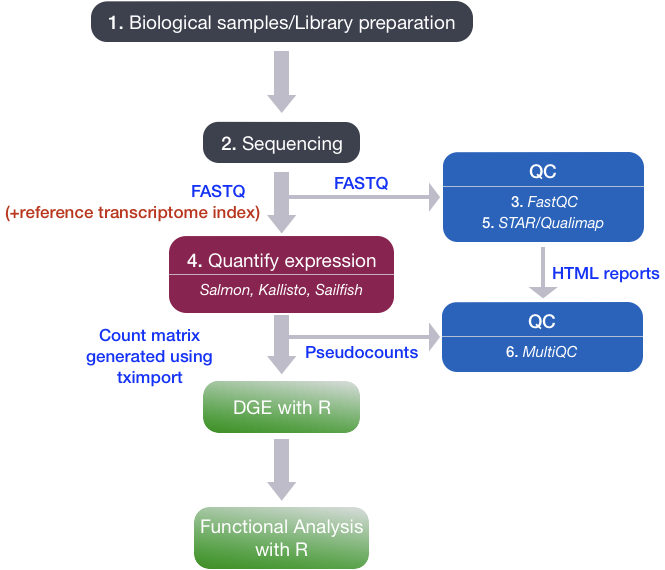
In the past, we used RNA-seq aligners like STAR to map reads to the genome, and read counting software like HTSeq-count or featureCounts to quantify counts of aligned reads over exons for each gene model.
The standard practice now is to use pseudocounts from tools like Salmon which do a much better job at estimating expression levels by:
Correcting for sequencing biases e.g. GC content
Correcting for differences in individual transcript lengths
Including reads that map to multiple genes
Producing much smaller output files than aligners
The NF-core RNA-seq pipeline can perform alignment with STAR and quantification with Salmon and is recommended for processing raw RNA-seq data.
Further Learning
If you are new to RNA-seq, this overview provides an explanation of how RNA-seq libraries are prepared, sequenced and quantified for short-read data.
DESeq2 requires non-normalised or raw count estimates at the gene-level for performing DE analysis.
Salmon outputs estimated read counts for each transcript in a file called quant.sf. We will use the R package tximport to import salmon transcript counts and summarise transcript abundance estimates for each gene.
The quant.sf files for our samples are already in the folder you downloaded. They are organised in sub-folders by sample name.
We also have a file called salmon_tx2gene.tsv which contains a map between transcript IDs and gene IDs for our annotation.
2. The DESeq2 method
DESeq2 performs statistical analysis of un-normalised raw/estimated read count data per gene. It uses a median of ratios normalisation method to account for differences in sequencing depth and RNA composition between samples.
Count data is modeled using a generalised linear model based on the negative binomial distribution, with a fitted mean and a gene-specific dispersion parameter which describes the relationship between variance in the count data and the observed mean. The reasoning behind the use of count data and the negative binomial distribution is described here.
The model coefficient represents the change in mean between sample groups giving us log2 fold change values per gene. By default, DESeq2 performs the Wald test to test for significant changes in gene expression between sample groups and generate p-values which are then adjusted for multiple testing.
The Wald test is a parametric statistical test that compares the estimated log2 fold change for each gene to its standard error. It tests the null hypothesis that the log2 fold change is equal to zero (i.e., no change in expression between groups) against the alternative hypothesis that it is not equal to zero.
DESeq2 has internal methods for:
Estimating size factors (sample normalisation)
Estimating dispersions
Fitting the negative binomial GLM (log2 fold changes)
Filtering outliers and low count genes
Statistical tests between sample groups (p-values)
DESeq2 and other differential expression tools perform statistical analysis by comparing mean expression levels between sample groups. Accurate mean estimates can only be achieved with precise estimates of the biological variation between independent samples.
In DE experiments, increasing the number of biological replicates is generally more desirable than increasing read depth in single samples, unless you are particularly interested in rare RNAs. DESeq2 will not work if a sample group only has one replicate and it is recommended to have at least 3.
If you have technical replicates in your experimental design, these should be merged into one sample to represent a single biological replicate.
We also need to ensure (as much as possible) that any effect we see between groups can be attributed to differences in biology rather than confounding factors in the design or batch effects introduced at the library preparation stage.
Comprehensive tutorials
This is a lightweight introduction to differential expression analysis. For a comprehensive overview of the DESeq2 method, functionality and complex experimental designs, check out the following resources:
The first step in our analysis is to create a tab separated file of sample IDs and metadata. This already exists in the folder you downloaded earlier but you would normally create this manually. We can then import the sample sheet to R with the read_tsv() function from readr.
For our DE analysis, we want to compare the expression levels of genes in our MOV10 over-expression and knockdown samples to the control. In this example, the Control samples are our reference or base-level sample. By default, DESeq2 will use the first level of the condition factor as the reference level. We should make sure the Control samples are the first level of our Group factor.
library(tidyverse)## Create a dataframess <-data.frame(Sample =c("Control_1","Control_2","Control_3","MOV10_OE_1","MOV10_OE_2","MOV10_OE_3","MOV10_KD_2","MOV10_KD_3"),Group =factor(c("Control","Control","Control","MOV10_OE","MOV10_OE","MOV10_OE","MOV10_KD","MOV10_KD"), levels =c("Control","MOV10_OE","MOV10_KD")),Replicate =factor(c(1,2,3,1,2,3,2,3)))## Or read in a sample sheet.## col_types argument specifies the data type for each column. The Sample name is a character and the Group and Replicate columns are factors.ss <-read_tsv("data/salmon/samples.tsv", col_names = T, col_types ="cff")## Look at our sample sheetss
# A tibble: 8 × 3
Sample Group Replicate
<chr> <fct> <fct>
1 Control_1 Control 1
2 Control_2 Control 2
3 Control_3 Control 3
4 MOV10_KD_2 MOV10_KD 2
5 MOV10_KD_3 MOV10_KD 3
6 MOV10_OE_1 MOV10_OE 1
7 MOV10_OE_2 MOV10_OE 2
8 MOV10_OE_3 MOV10_OE 3
Key points:
The sample file contains metadata on each sample
The sample file should include a column for the variable of interest (e.g. condition, genotype, group)
It is also important to include all other known variables that could confound results or explain technical variance. These can be used in plotting and quality control
4. Importing count data with tximport
The package tximport can read Salmon transcript count files and create a matrix of read counts for each gene.
Transcript to gene mapping
We must supply a map between transcript IDs and gene IDs for our annotations, so that the function can summarise counts at gene level. This file is already provided in the downloaded data.
library(GenomicFeatures)## Get the tx2gene map filetx2gene <-read_tsv("data/salmon/salmon_tx2gene.tsv",col_names =c("TranscriptID","GeneID","GeneSymbol"))
If you don’t have a transcript -> gene map, these can be downloaded from annotation databases like Ensembl or generated from a gtf annotation file using the GenomicFeatures package as shown below.
### EXAMPLE: DO NOT RUN THIS CODE!!## Make a Transcript DB object from a gene annotation GTF filetxdb <-makeTxDbFromGFF(organism ="Homo sapiens", file ="Homo_sapiens.GRCh38.106.gtf", format ="gtf")## Extract mappings from transcriptID to geneIDk <-keys(txdb, keytype ="TXNAME")tx2gene <-select(txdb, k, "GENEID", "TXNAME")
When we import our transcript counts with tximport(), we will use the transcript ID and gene ID columns to summarise transcript counts to gene counts. The gene symbol column is not used in this step but it can be used later to annotate our results.
Import transcript read counts
library(tximport)## List all of our salmon quant.sf filesfiles <-file.path("data/salmon",ss$Sample,"quant.sf")names(files) <- ss$Sample## Import the transcript counts and summarise to gene countstxi <-tximport(files, type ="salmon", tx2gene = tx2gene)str(txi)
The txi object is a list containing the following elements:
abundance: A matrix of transcript abundances (TPM) for each gene in each sample
counts: A matrix of estimated read counts for each gene in each sample
length: A matrix of the average transcript length for each gene in each sample. This is calculated as the weighted average of the lengths of the transcripts that map to each gene, where the weights are based on the estimated abundance of each transcript
The tximeta package extends tximport to automatically detect the genome, download the tx2gene map and import count data in one function.
Key points:
Import pseudo-count data into R with tximeta or tximport
DESeq2 expects gene-level counts
Summarise transcript counts to gene counts
5. Creating a DESeq object
Now that we have per-gene count data, we can import this into DESeq2. We need to supply the txi object we have just created as well as the design for our differential expression analysis.
The simplest design is to compare our samples by the Group column (Control, MOV10_KD, MOV10_OE). The design is a formula in R so is preceded by the ~ character.
The dds object is a DESeqDataSet object with 58396 rows and 8 columns, where the rows are the genes and the columns are the samples. These genes include non-coding RNAs as well as protein-coding genes.
The columns of the colData slot contain the sample metadata from our sample sheet and can be accessed with the colData() function.
colData(dds)
DataFrame with 8 rows and 3 columns
Sample Group Replicate
<character> <factor> <factor>
Control_1 Control_1 Control 1
Control_2 Control_2 Control 2
Control_3 Control_3 Control 3
MOV10_KD_2 MOV10_KD_2 MOV10_KD 2
MOV10_KD_3 MOV10_KD_3 MOV10_KD 3
MOV10_OE_1 MOV10_OE_1 MOV10_OE 1
MOV10_OE_2 MOV10_OE_2 MOV10_OE 2
MOV10_OE_3 MOV10_OE_3 MOV10_OE 3
We can access the count data with the assay() function.
In this example, we created our DESeq dataset from a tximport object. But what if we already have a read count table or used a different workflow to generate counts?
DESeq2 has the functions DESeqDataSetFromMatrix() and DESeqDataFromHTSeqCount to create a DESeq dataset from a count matrix or HTSeq-count output files respectively. You can read more about these in the DESeq2 vignette.
DESeq2 design formula
The design formula is used to specify the variables that we want to use in our DE analysis. In this case, we have a single variable of interest, Group, which has three levels (Control, MOV10_OE, MOV10_KD). DESeq2 will perform pairwise comparisons between these levels by default.
If we had other variables in our experimental design that we wanted to control for (e.g. sex, cell type, batch etc) we could include these in our design formula as well. For example, if we had a batch variable we could specify the design as ~ Batch + Group to control for batch effects in our analysis.
In this case, DESeq2 will first test for differences between batches and then test for differences between groups while controlling for batch effects. This is a powerful way to control for confounding factors in your analysis and ensure that any significant results you find are more likely to be biologically relevant.
It is possible to perform complex analyses with multiple variables of interest and interaction terms in DESeq2.
Further Learning
Have a look at these resources for advice on complex experimental designs (e.g. multiple variables of interest, interaction terms, time-course analysis:
Now we are ready to run DESeq. The DESeq function has internal methods to:
Estimate size factors: Normalise gene counts per sample
Estimate gene-wise dispersions: Measure variance in the dataset
Shrink gene-wise dispersions: Improve the dispersion estimates
Fit a negative binomial statistical model to the data
Perform statistical testing with the Wald Test or Likelihood Ratio Test
## run DESeqdds <-DESeq(dds)## save the dds object as a file for later usesaveRDS(dds, file ="dds.RDS")
Size factor estimation
DESeq2 uses a median of ratios method to normalise gene counts per sample. This method calculates size factors for each sample which are used to normalise the counts. The size factor for each sample is calculated as the median of the ratios of the observed counts to the geometric mean of the counts across all samples for each gene. This method is robust to differences in sequencing depth and RNA composition between samples, making it a good choice for normalising RNA-seq data. You can read more about RNA-seq normalisation here.
This normalisation method assumes that most of the genes are not differentially expressed between sample groups. If this assumption is violated (e.g. in cases of global changes in gene expression) then the size factor estimation may be inaccurate and alternative normalisation methods should be considered.
Plot dispersions
It can be useful to plot the gene-level dispersion estimates to ensure the DESeq model is right for your data. You should find that dispersion is generally lower for genes with higher read counts, that final dispersion levels have been shrunk towards the fitted model and that a few outliers exist which have not been shrunk. If the red line is not a good generalisation for your data then DE analysis with DESeq2 may not be appropriate.
Run the DESeq() function and understand the internal steps
Plot dispersions to assess the fitted model
7. DESeq quality control
Before we look at the results of differential expression tests we first want to perform some quality control by visualising and assessing the entire dataset.
Transform count data for visualisation
Count data is not optimal for visualisation and clustering as there are likely to be a few genes with very high expression and variance.
DEseq provides two functions to transform count data for visualisation and clustering:
rlog(): Regularised log transformation
vst(): Variance stabilising transformation
The rlog() function is generally recommended for smaller datasets (less than 30 samples) as it can be more effective at reducing the bias from genes with extreme counts. The vst() function is faster to run and is recommended for larger datasets.
## Log transformed datarld <-rlog(dds, blind=F) ## Blind=F means the transformation will take into account the experimental designsaveRDS(rld, file ="MOV10.rld.RDS")
Further Learning
You can read more on DESeq2 data transformations here.
Heatmap of Sample Distances
We can use our log transformed data to perform sample clustering. Here, we calculate sample distances by applying the dist() function to our transformed read count matrix.
By default, the dist() function calculates euclidean distances between the rows of a matrix. We have to transpose our read count table first to calculate distances between samples (columns). The distance calculated is a measure of the distance between two vectors, in this case the read counts for all genes:
\[d(a,b) = \sqrt{\sum_{i=1}^{n} (a_i - b_i)^2}\]
A heatmap of this distance matrix gives us an overview of similarities and dissimilarities between samples.
library("pheatmap") # heatmap plotting packagelibrary("RColorBrewer") # colour scalessampleDists <-dist(t(assay(rld))) ## t() function transposes a matrixsampleDistMatrix <-as.matrix(sampleDists)rownames(sampleDistMatrix) <-as.list(colnames(dds))colnames(sampleDistMatrix) <-as.list(colnames(dds))cols <-colorRampPalette( rev(brewer.pal(9, "Blues")) )(255) ## Set a colour pallette in shades of bluepheatmap(sampleDistMatrix,clustering_distance_rows = sampleDists,clustering_distance_cols = sampleDists,col = cols)
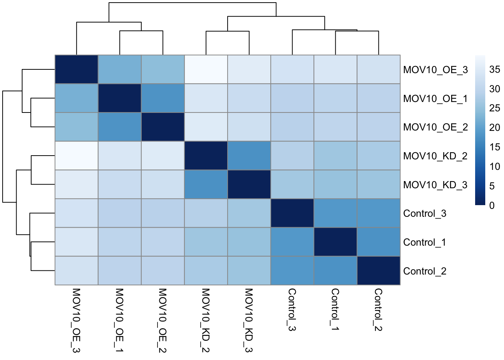
Principle Component Analysis
Another way to visualise sample-to-sample distances is a principal component analysis (PCA). PCA is a dimensionality reduction technique that identifies the directions (principal components) in which the data varies the most. Each principal component is a linear combination of the original variables (genes) and captures a certain percentage of the total variance in the data.
We can then plot our samples on a 2D plot where the x-axis and y-axis represent the first two principal components (PC1 and PC2).
The percent of the total variance that is contained in each direction is printed on the axis label. Note that these percentages do not add to 100%, because there are more dimensions that contain the remaining variance.
We expect to see our samples divide by their biological Group or some other source of variation that we are aware of (e.g. sex, cell type, batches of library preparation etc).
If you do not see your samples separating by your variable of interest you may want to plot out PC3 and PC4 to see if it appears there. If there is a large amount of variance introduced by other factors or batch effects then you will need to control for these in your experimental design.
We will run the PCA analysis with the DESeq2 command plotPCA().
## Principle component analysis - get the PCA dataplotPCA(rld, intgroup =c("Group"))
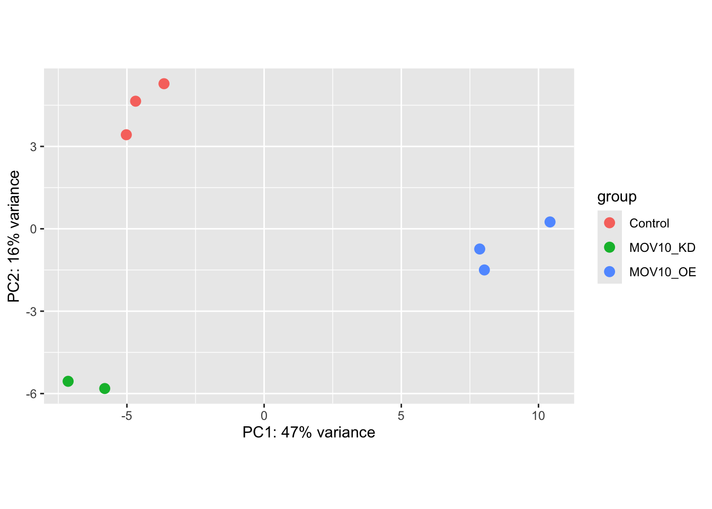
If we don’t like the default plotting style we can ask plotPCA to return the data only and create our own custom plot with ggplot.
To plot PC3 and PC4 we can specify the pcsToUse argument in plotPCA(). By default, only the top 500 most variable genes are used in the PCA analysis. If you want to use all genes, you can set the ntop argument.
It may also be useful to take an initial look at the genes with the highest amount of variation across the dataset. We should expect to see some genes which appear to be differentially expressed between sample groups.
## Get the top 20 genes after ordering the rld counts by variancetopVarGenes <-head(order(-rowVars(assay(rld),useNames = T)), 20)## Create a matrix from these genes onlymat <-assay(rld)[topVarGenes, ] ## Create an annotation dataframe for the columns (samples) to show the Group and Replicate informationanno <-as.data.frame(colData(dds)[,c("Group","Replicate")])## Plot the heatmap with pheatmappheatmap(mat, cluster_rows = T, cluster_cols = T, show_rownames = T, scale ="row", annotation_col = anno)
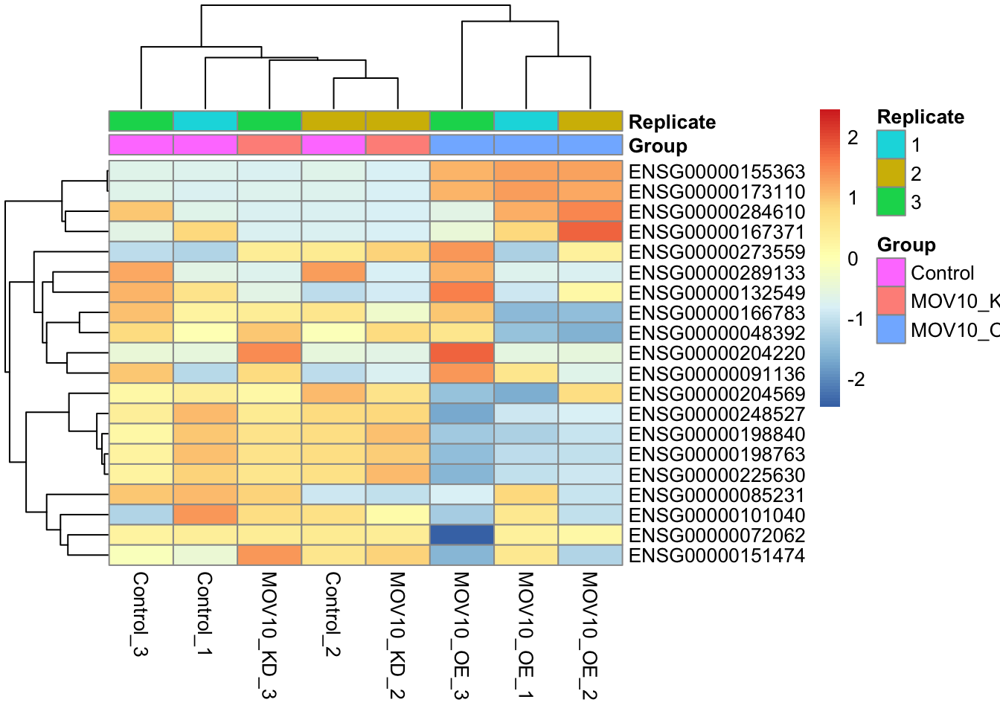
Discussion
Can you guess which gene has the Ensembl identifier ENSG00000155363? What are some of the other genes in the top 20 most variable genes? Do you think these are likely to be differentially expressed between sample groups?
Challenge:
Replace the rownames of the mat matrix with gene symbols from the tx2gene map and re-plot the heatmap.
Solution.
Solution:
## set rownames to symbol using the tx2gene maprownames(mat) <- tx2gene$GeneSymbol[match(rownames(mat), tx2gene$GeneID)]## Plot the heatmap againpheatmap(mat, cluster_rows = T, cluster_cols = T, show_rownames = T, scale ="row", annotation_col = anno)
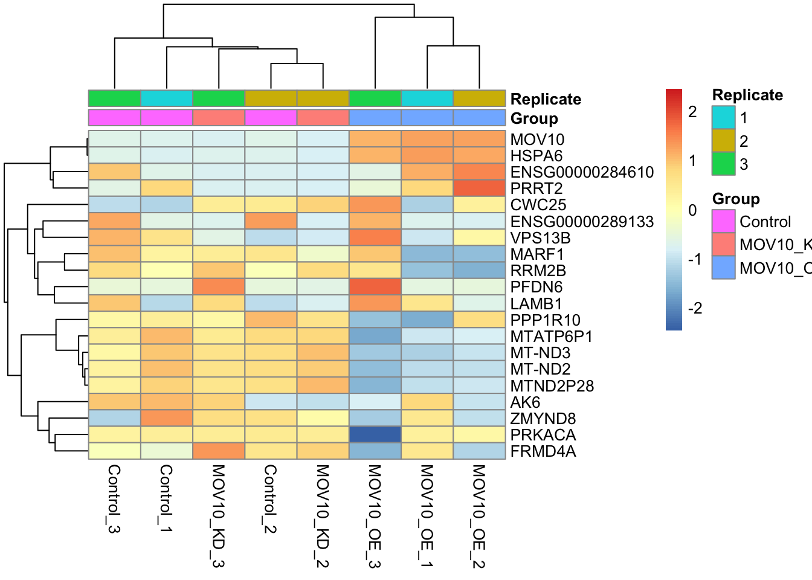
Plot Individual Gene Counts
In certain cases like ours, where we know the expression levels of particular genes should change between sample groups, we may want to plot individual gene counts for quality control. Let’s plot normalised gene counts for the MOV10 gene (ENSG00000155363).
## Get normalised counts for a single genegene ="ENSG00000155363"geneData <-plotCounts(dds, gene = gene, intgroup =c("Group", "Replicate"), returnData =TRUE, normalized = T)## Plot with ggplotggplot(geneData, aes(x = Group, y= count, colour = Replicate)) +geom_jitter(position =position_jitter(width =0.2, height =0), size =3) +scale_y_log10() +theme_bw() +theme(legend.key =element_blank()) +ggtitle(gene) +theme(axis.text.x =element_text(angle =90, hjust =1))
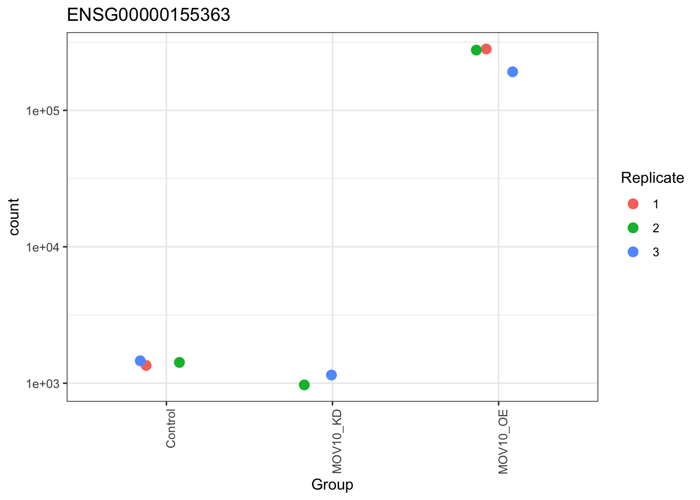
Key points:
Transform count data for summary plots
Create summary plots and assess for QC
PCA
Clustering by sample distance
Heatmaps of gene counts
Individual gene counts
8. Extract DESeq2 results
If we are happy with our QC assessment we can retrieve results from the DESeq object and visualise fold changes between specific groups.
DESeq2 has a results() function, which by default prints the results of the last level in your design variables against the reference level. In our case this is MOV10_OE vs Control.
results(dds)
log2 fold change (MLE): Group MOV10 OE vs Control
Wald test p-value: Group MOV10 OE vs Control
DataFrame with 58396 rows and 6 columns
baseMean log2FoldChange lfcSE stat pvalue
<numeric> <numeric> <numeric> <numeric> <numeric>
ENSG00000000003 3493.3769 -0.4426597 0.0851357 -5.1994602 1.99868e-07
ENSG00000000005 26.2026 -0.0163884 0.4447545 -0.0368482 9.70606e-01
ENSG00000000419 1600.4515 0.3753645 0.0998817 3.7580902 1.71215e-04
ENSG00000000457 504.6620 0.2532487 0.1053669 2.4034929 1.62393e-02
ENSG00000000460 1112.7132 -0.2626755 0.0852641 -3.0807284 2.06495e-03
... ... ... ... ... ...
ENSG00000289714 0.000000 NA NA NA NA
ENSG00000289715 0.000000 NA NA NA NA
ENSG00000289716 28.600952 0.112480 0.553978 0.203041 0.839103
ENSG00000289718 0.167725 -1.026277 4.080456 -0.251510 0.801420
ENSG00000289719 14.921394 0.614092 0.547343 1.121950 0.261884
padj
<numeric>
ENSG00000000003 4.12199e-06
ENSG00000000005 9.84458e-01
ENSG00000000419 1.39950e-03
ENSG00000000457 5.80996e-02
ENSG00000000460 1.12268e-02
... ...
ENSG00000289714 NA
ENSG00000289715 NA
ENSG00000289716 0.912842
ENSG00000289718 NA
ENSG00000289719 0.444436
However, the dds object stores several results. You can see these with the function resultsNames().
The Intercept result is a statistical model that compares gene expression to 0 so is not relevant here. We can see that we have results for both of our MOV10 perturbation experiments vs the control.
We can extract a specific result by providing a contrast argument to the results() function.
res <-results(dds, contrast =c("Group","MOV10_OE","Control"))res
log2 fold change (MLE): Group MOV10_OE vs Control
Wald test p-value: Group MOV10 OE vs Control
DataFrame with 58396 rows and 6 columns
baseMean log2FoldChange lfcSE stat pvalue
<numeric> <numeric> <numeric> <numeric> <numeric>
ENSG00000000003 3493.3769 -0.4426597 0.0851357 -5.1994602 1.99868e-07
ENSG00000000005 26.2026 -0.0163884 0.4447545 -0.0368482 9.70606e-01
ENSG00000000419 1600.4515 0.3753645 0.0998817 3.7580902 1.71215e-04
ENSG00000000457 504.6620 0.2532487 0.1053669 2.4034929 1.62393e-02
ENSG00000000460 1112.7132 -0.2626755 0.0852641 -3.0807284 2.06495e-03
... ... ... ... ... ...
ENSG00000289714 0.000000 NA NA NA NA
ENSG00000289715 0.000000 NA NA NA NA
ENSG00000289716 28.600952 0.112480 0.553978 0.203041 0.839103
ENSG00000289718 0.167725 -1.026277 4.080456 -0.251510 0.801420
ENSG00000289719 14.921394 0.614092 0.547343 1.121950 0.261884
padj
<numeric>
ENSG00000000003 4.12199e-06
ENSG00000000005 9.84570e-01
ENSG00000000419 1.39950e-03
ENSG00000000457 5.80996e-02
ENSG00000000460 1.12268e-02
... ...
ENSG00000289714 NA
ENSG00000289715 NA
ENSG00000289716 0.912953
ENSG00000289718 NA
ENSG00000289719 0.444436
The results table includes several columns:
baseMean = Mean normalised read counts of all samples
log2FoldChange = Log2 of the fold change between sample groups in the contrast
lfcSE = Standard error of the log2 fold change
stat = The test statistic (Wald test in this case)
pvalue = The pvalue for the statistical test
padj = The pvalue adjusted for multiple testing
Multiple testing correction and independent filtering
The two most important columns in our results table are log2FoldChange, which is the effect size and tells us how much a gene’s expression has changed, and padj which gives us the level of statistical confidence in this result.
DESeq2 reports adjusted p-values (padj) which are corrected for multiple testing. We should use these values, not the pvalue column, to filter or call significant genes!
DESeq2 uses the Benjamini-Hochberg method to adjust p-values and control the false discovery rate. If you filter for genes with a padj <= 0.05 you would expect 5% of these to be false positives.
If you inspect the result table you may notice that some genes have padj and/or pvalue set to NA. This is because the results() function performs filtering of genes to reduce the total number of genes tested and increase the likelihood of finding significant genes after the multiple testing correction. The more genes we test, the larger the multiple testing correction, so it makes sense to remove genes where we are unlikely to see a statistical effect:
Genes with zero counts in all samples
Genes with extreme outliers
Genes with extremely low normalised counts
Let’s look at a summary of our results. We will also set an alpha to tell DESeq which significance threshold to use when summarising results:
alpha =0.05summary(res, alpha = alpha)
out of 34774 with nonzero total read count
adjusted p-value < 0.05
LFC > 0 (up) : 2077, 6%
LFC < 0 (down) : 2708, 7.8%
outliers [1] : 14, 0.04%
low counts [2] : 16900, 49%
(mean count < 9)
[1] see 'cooksCutoff' argument of ?results
[2] see 'independentFiltering' argument of ?results
This is great, we definitely have significant differentially expressed genes!
Log Fold Change Shrinkage
Let’s take a look at these results visually. DESeq2 provides a plotMA() function to create MA plots(log2FoldChange vs the mean of normalised counts), a common way to visualise DE genes.
plotMA(res)
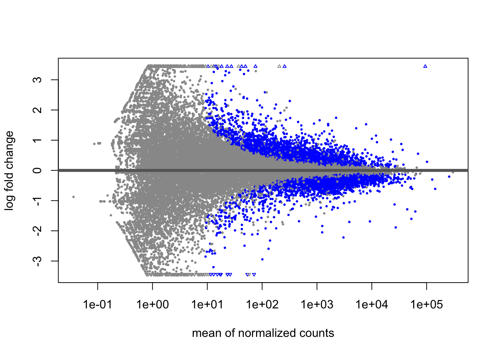
Significant genes (<=0.05 padj) appear in blue, while non-significant genes are grey. We can immediately see that genes with low counts have much larger variation in log-fold changes.
DESeq2 provides the LFCshrink() function to shrink the fold change estimates and reduce the “noise” from these genes. We can use it instead of the results() function and these shrunken fold changes are much better for visualising and ranking our data.
The LFC shrinkage method we will use is called apeglm and is based on an adaptive t prior shrinkage estimator for log fold changes. This method has been shown to perform well in terms of reducing noise while preserving true signal in the data.
library(apeglm)resLFC <-lfcShrink(dds, coef ="Group_MOV10_OE_vs_Control", type ="apeglm")summary(resLFC, alpha = alpha)
out of 34774 with nonzero total read count
adjusted p-value < 0.05
LFC > 0 (up) : 2077, 6%
LFC < 0 (down) : 2708, 7.8%
outliers [1] : 14, 0.04%
low counts [2] : 16900, 49%
(mean count < 9)
[1] see 'cooksCutoff' argument of ?results
[2] see 'independentFiltering' argument of ?results
We can see that the number of significant genes is unaffected. Let’s create a new MA plot.
plotMA(resLFC)
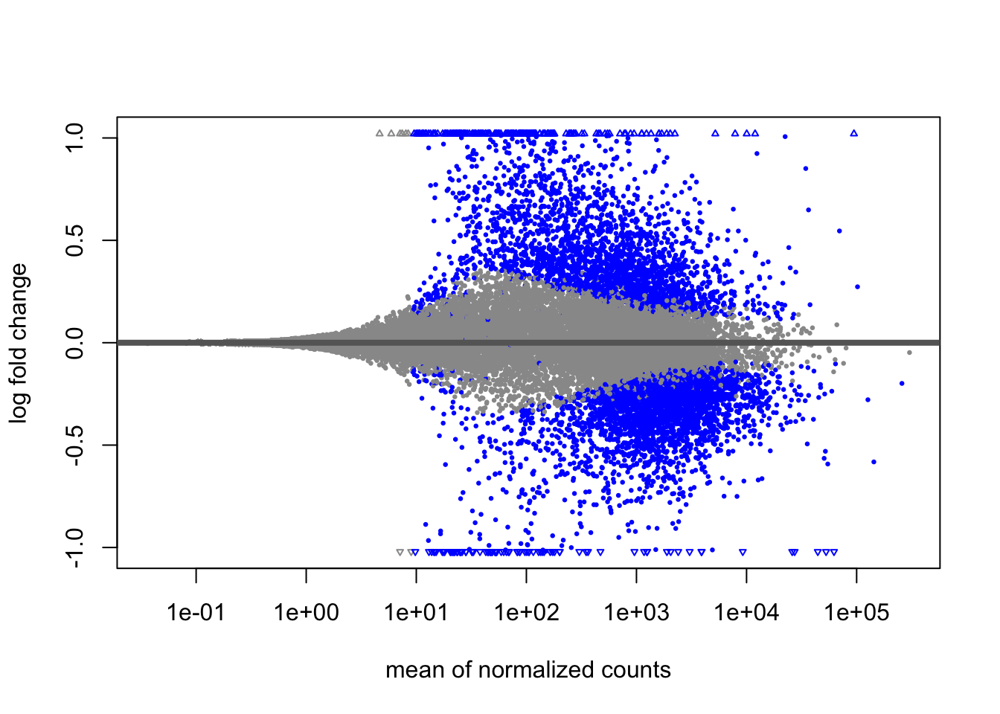
These shrunken fold changes are more useful for downstream analysis of the data where we want to rank or visualise genes by their fold change. We will use these shrunken fold changes for the rest of our analysis.
Formatting and annotating results
We will apply a bit of formatting to our results table and also add some annotation.
Convert to a tidyverse tibble
Move the rownames to a geneID column
Add the geneSymbol from the tx2gene map as a new column
Create a Significant column for genes we wish to label as significant
Order the table by padj so the most significant genes are at the top
gene_map <- tx2gene |> dplyr::select(GeneID, GeneSymbol) |>unique()## Set a threshold for log2 fold change to call significant genes by effect size as well as padjlthresh =1## Build the result tableresult_table <- resLFC |>as.data.frame() |>rownames_to_column("GeneID") |>left_join(gene_map, by ="GeneID") |>mutate(Significant =case_when( padj <= alpha &abs(log2FoldChange) >= lthresh ~"Both", padj <= alpha &abs(log2FoldChange) < lthresh ~"padj", padj > alpha &abs(log2FoldChange) >= lthresh ~"l2FC",.default ="Not Significant") ) |>mutate(Significant =factor(Significant, levels =c("Not Significant", "padj", "l2FC", "Both"))) |>arrange(padj) |>as_tibble()result_table
Our result table contains Ensembl gene identifiers. We can use these to fetch additional annotations from the Ensembl website or fetch annotations using the AnnotationHub or biomaRt packages.
library(AnnotationHub)ah <-AnnotationHub()## Search for the human annotation database in Ensembl version 106query(ah, c("GRCh38","106"))
AnnotationHub with 10 records
# snapshotDate(): 2024-10-28
# $dataprovider: Ensembl
# $species: homo sapiens, Homo sapiens
# $rdataclass: TwoBitFile, GRanges, EnsDb
# additional mcols(): taxonomyid, genome, description,
# coordinate_1_based, maintainer, rdatadateadded, preparerclass, tags,
# rdatapath, sourceurl, sourcetype
# retrieve records with, e.g., 'object[["AH100643"]]'
title
AH100643 | Ensembl 106 EnsDb for Homo sapiens
AH102892 | Homo_sapiens.GRCh38.106.abinitio.gtf
AH102893 | Homo_sapiens.GRCh38.106.chr.gtf
AH102894 | Homo_sapiens.GRCh38.106.chr_patch_hapl_scaff.gtf
AH102895 | Homo_sapiens.GRCh38.106.gtf
AH103843 | Homo_sapiens.GRCh38.cdna.all.2bit
AH103844 | Homo_sapiens.GRCh38.dna.primary_assembly.2bit
AH103845 | Homo_sapiens.GRCh38.dna_rm.primary_assembly.2bit
AH103846 | Homo_sapiens.GRCh38.dna_sm.primary_assembly.2bit
AH103847 | Homo_sapiens.GRCh38.ncrna.2bit
## Fetch the annotation for AH102893, which is the Ensembl GTF file for GRCh38 version 106. This is the GTF file that was used with Salmon to create our read count table.Ensembl.hg38.106.gr <- ah[["AH102893"]]Ensembl.hg38.106.gr
## Convert to a dataframe and select the gene_id and gene_biotype columnsgene_biotype <- Ensembl.hg38.106.gr |>as.data.frame() |> dplyr::select(gene_id, gene_biotype) |> dplyr::rename(ensembl_gene_id = gene_id) |>unique()## Example code for fetching biotype annotation with biomaRt. This is not run here as the connection to the Ensembl database can be unreliable. You can run this code if you want to fetch the biotype annotation yourself, but the result is already provided in the `gene_biotype` object above.#library(biomaRt)#ensembl <- useMart("ensembl", dataset = "hsapiens_gene_ensembl")#gene_biotype <- getBM(attributes =c("ensembl_gene_id","gene_biotype"), mart = ensembl)gene_biotype |>head()
Now we can merge our result table with the biotype column.
## Map all result lists to a function that joins with the anno dataresult_table <- result_table |>left_join(gene_biotype, by =c("GeneID"="ensembl_gene_id")) |>mutate(gene_biotype =factor(gene_biotype)) ## set biotype to factor
We could use this column to filter our results if we are interested in specific types of RNA (e.g. protein coding).
We will now save the result table to file so we can use it outside of R if required.
We have already seen the MA plot but there are many other methods for plotting DESeq2 results. We will cover some popular visualisations below.
Volcano plots
A volcano plot is a popular visualisation for DE analysis. Here we are plotting the log fold change on the x-axis against the negative log10 of our adjusted p-values, so that significant genes appear at the top of the plot.
We can then see the spread of fold changes in each direction in our set of significant genes.
We can use our Significant column to colour our points by whether they are significant by padj, log2 fold change or both.
We can take a look at the types of RNAs which are represented in our list of DE genes. First, let’s filter our results for genes which pass our threshold for differential expression.
## Get significant DEGs with padj <= 0.05 and log2 fold change >= 1sig_genes <- result_table |> dplyr::filter(padj <= alpha)## Plot barplot of gene_biotypeggplot(sig_genes, aes(gene_biotype, fill = gene_biotype)) +geom_bar(position ="dodge") +theme_bw() +xlab("") +theme(axis.text.x =element_text(angle =45, vjust =1, hjust=1)) +guides(fill="none")
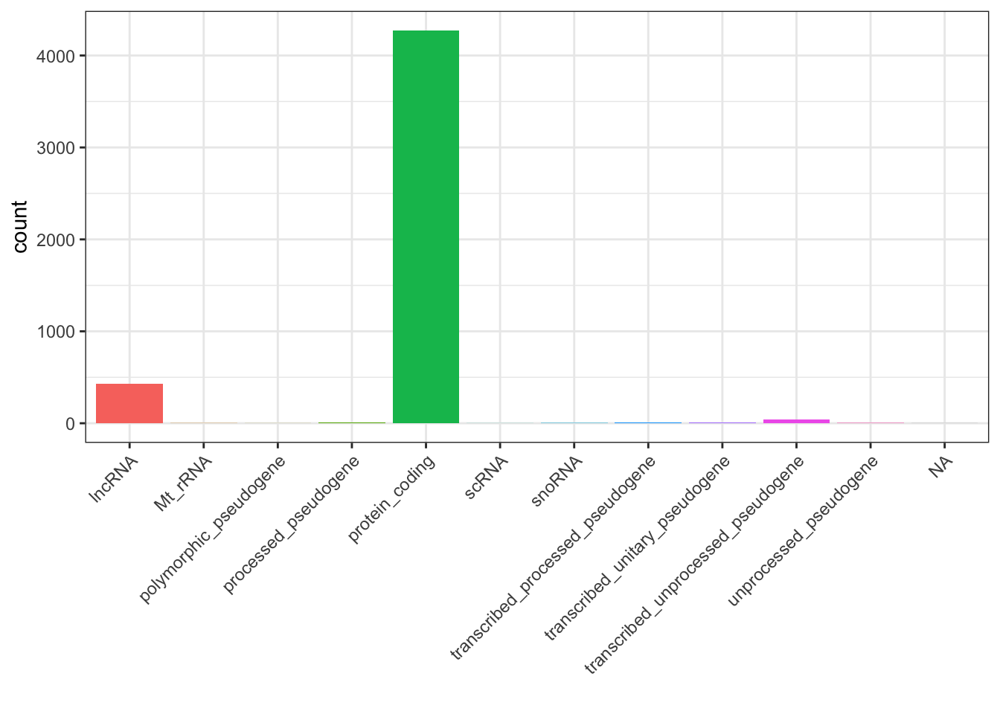
We can see that most of our DE genes are protein coding.
Heatmaps of genes with largest changes
We can use the log normalised counts we created earlier to plot heatmaps of genes with the largest changes.
## Out of all significant genes, get the 20 with the largest fold change in either direction in MOV10_OE relative to the controltop20 <- result_table |> dplyr::filter(padj <= alpha) |>arrange(desc(abs(log2FoldChange))) |>head(n =20) |>pull(GeneID)## Create a matrix of rld counts and plot the heatmapmat <-assay(rld)[top20,]## Set rownames to gene symbols using the tx2gene maprownames(mat) <- tx2gene$GeneSymbol[match(rownames(mat), tx2gene$GeneID)]## Create a colour palette for the heatmapcolors <-colorRampPalette(rev(brewer.pal(9, "RdBu")) )(255)## Plot the heatmappheatmap(mat, color = colors, scale ="row", cluster_rows = T, cluster_cols = T, annotation_col = anno)
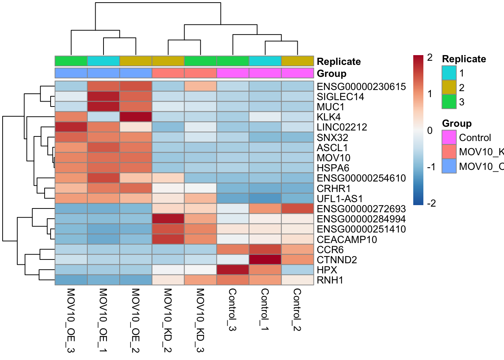
Key points:
There are many ways to summarise and visualise DE results
Get creative!
10. Functional enrichment analysis
Now that we have our list of DE genes, we can perform functional enrichment analysis to see if particular pathways or gene sets are over-represented in our list of DE genes. This is a powerful way to gain insight into the biological processes that may be affected by our experimental perturbation.
We will use the clusterProfiler package to perform enrichment analysis, testing for over-representation of Gene Ontology (GO) terms and KEGG pathway IDs in our list of DE genes.
We will test our list of DE genes against the background of all genes that were tested in our DESeq2 analysis (i.e. all genes that passed the independent filtering step). This is important to ensure that we are testing for enrichment against the correct background set of genes.
The Gene Ontology is a hierarchical database of gene functions that are organised into three categories: Biological Process (BP), Molecular Function (MF) and Cellular Component (CC). We can use the enrichGO() function to test for over-representation of GO terms in our list of DE genes.
library(clusterProfiler)library(org.Hs.eg.db)## Get a vector of significant gene IDssig_gene_ids <- sig_genes$GeneID## Get a vector of background gene IDs (all genes that were tested in DESeq2)background_gene_ids <- result_table$GeneID## Perform GO enrichment analysis for the Biological Process categoryego <-enrichGO(gene = sig_gene_ids,universe = background_gene_ids,OrgDb = org.Hs.eg.db,keyType ="ENSEMBL",ont ="BP",pAdjustMethod ="BH",qvalueCutoff =0.05,readable = T)## View the result as a datatabledata.frame(ego) |>head()
## Plot the ego resultsdotplot(ego, showCategory =20) +ggtitle("GO Biological Process Enrichment") +theme(axis.text.y =element_text(size =8))
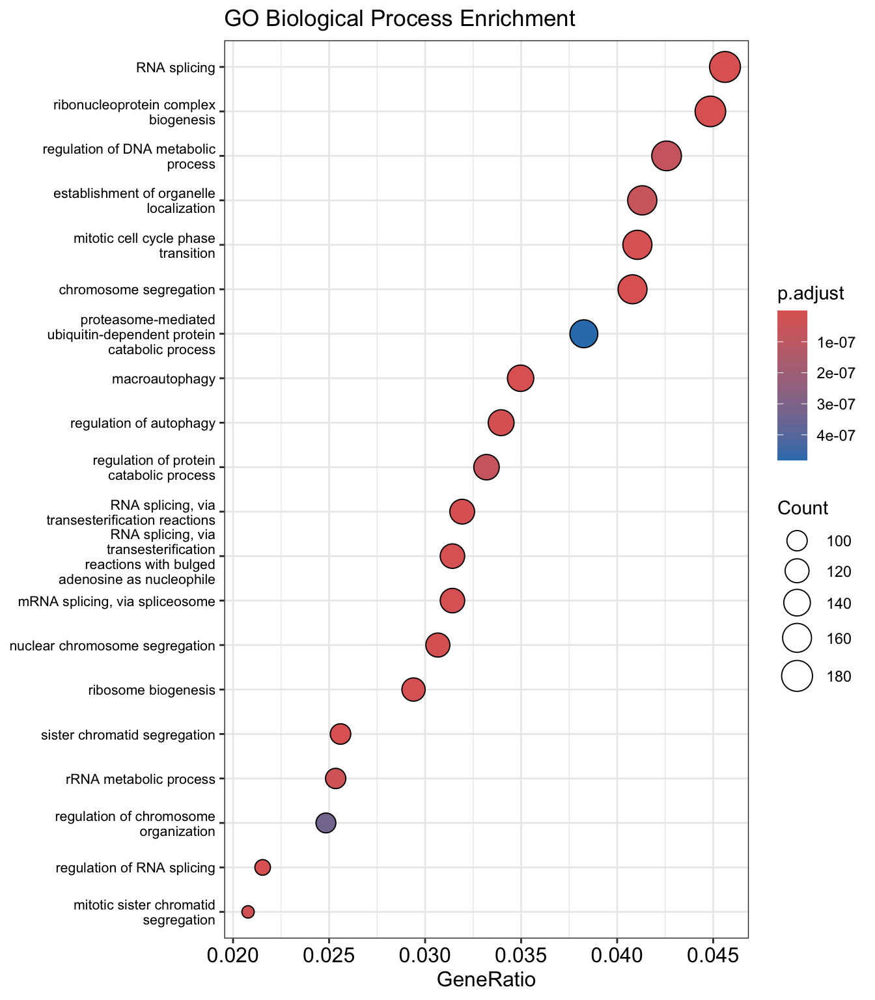
We can also plot the similarity between significant GO terms with an enrichment map plot. This is a network-based visualization that shows the relationships between enriched GO terms based on the overlap of their gene sets.
The KEGG database is a collection of manually curated pathways that represent our current knowledge of molecular interactions and reactions in various biological processes. We can use the enrichKEGG() function to test for over-representation of KEGG pathways in our list of DE genes.
The KEGG database uses Entrez gene identifiers, so we need to convert our Ensembl gene IDs to Entrez IDs before we can perform the enrichment analysis. We can use the bitr() function from the clusterProfiler package to perform this conversion.